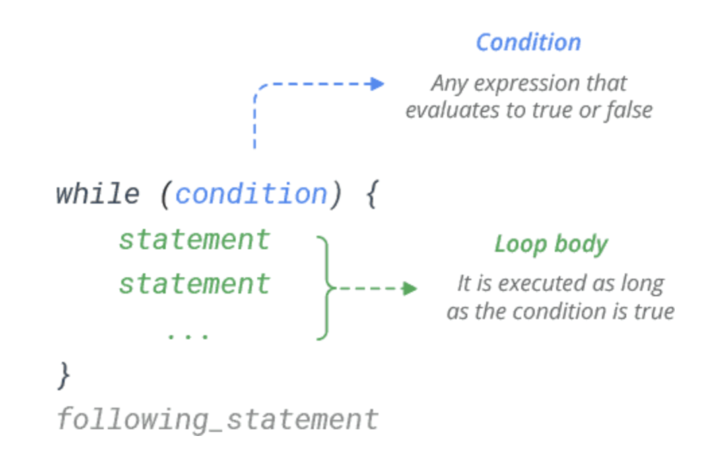

Chapter 14 Loops
Loops are another type of control flow structure. They dictate how many times a series of commands should be run. There are two type of loops, a while loop and a for loop. These two loops operate similarly and are found in other programming languages such as C and Python.
14.1 While Loop
A while loop is used when you want to perform a task indefinitely, until a particular condition is met. It’s a condition-controlled loop.

The loop will continue until the condition is FALSE.
## [1] 5
## [1] 4
## [1] 3
## [1] 2
## [1] 1If the condition is false at the start, the while loop will never be executed at all.
14.2 For Loops
The for statement in R is a bit different from what you usually use in other programming languages. Rather than iterating over a numeric progression, R’s for statement iterates over the items of a vector or a list. The items are iterated in the order that they appear in the vector.

# Iterate through a vector
colors <- c("red", "green", "blue", "yellow")
for (x in colors) {
print(x)
}## [1] "red"
## [1] "green"
## [1] "blue"
## [1] "yellow"## [1] 3.14
## [1] "Hi"
## [1] 1 2 3If you need to execute a group of statements for a specified number of times, use sequence operator : or built-in function seq().
## [1] "Hello!"
## [1] "Hello!"
## [1] "Hello!"## [1] 4
## [1] 16
## [1] 36
## [1] 6414.3 Break
The break statement is used to exit the loop immediately. It simply jumps out of the loop altogether, and the program continues after the loop.
x <- 5
# If statement starts as TRUE, the loop will never run
while (x != 0) {
print(x)
x = x - 1
if (x == 2) {
print("Entered IF statement, stop loop")
break
}
}## [1] 5
## [1] 4
## [1] 3
## [1] "Entered IF statement, stop loop"If not given an adequate stopping criteria or break statement the loop will continue forever. For example, if we started the above examples at x = -2. The break statement is particularly important for the while loop.
The break statement can also be used in a for loop. It simply jumps out of the loop altogether, and the program continues after the loop.
colors <- c("red", "green", "blue", "yellow")
for (x in colors) {
if (x == "blue") {
break
}
print(x)
}## [1] "red"
## [1] "green"The for loops do not have the same risk of “running forever”, like while loops have.
14.4 Next
We can also use the next command in both for loops and while loops in order to skip executing a command.
## [1] 9
## [1] 16
## [1] 25
## [1] 36
## [1] 49
## [1] 64
## [1] 81
## [1] 100The code inside the loop will run until it reaches the next statement. Once
14.5 Nested Loops
We can also create loops within loops. We refer to creating loops within other loops as a nested loop.
## [1] "i= 1 , j= 1"
## [1] "i= 1 , j= 2"
## [1] "i= 1 , j= 3"
## [1] "i= 2 , j= 1"
## [1] "i= 2 , j= 2"
## [1] "i= 2 , j= 3"
## [1] "i= 3 , j= 1"
## [1] "i= 3 , j= 2"
## [1] "i= 3 , j= 3"
## [1] "i= 4 , j= 1"
## [1] "i= 4 , j= 2"
## [1] "i= 4 , j= 3"
## [1] "i= 5 , j= 1"
## [1] "i= 5 , j= 2"
## [1] "i= 5 , j= 3"
## [1] "i= 6 , j= 1"
## [1] "i= 6 , j= 2"
## [1] "i= 6 , j= 3"
## [1] "i= 7 , j= 1"
## [1] "i= 7 , j= 2"
## [1] "i= 7 , j= 3"
## [1] "i= 8 , j= 1"
## [1] "i= 8 , j= 2"
## [1] "i= 8 , j= 3"
## [1] "i= 9 , j= 1"
## [1] "i= 9 , j= 2"
## [1] "i= 9 , j= 3"
## [1] "i= 10 , j= 1"
## [1] "i= 10 , j= 2"
## [1] "i= 10 , j= 3"Here is an example of a nested loop which changes the elements of matrix to be the product of the row and column location.
my_matrix <- matrix(NA, nrow = 5, ncol = 5)
for (i in 1:nrow(my_matrix)) {
for (j in 1:nrow(my_matrix)) {
my_matrix[i, j] = i * j
}
}
my_matrix## [,1] [,2] [,3] [,4] [,5]
## [1,] 1 2 3 4 5
## [2,] 2 4 6 8 10
## [3,] 3 6 9 12 15
## [4,] 4 8 12 16 20
## [5,] 5 10 15 20 2514.6 Examples
A few more examples.
14.6.1 Example 1
Below we create a function that has only one argument, vec, an arbitrary numeric vector. This function create a new vector containing all elements in vec whole numbers, and returns this new vector. If there are no whole numbers in vec, then it returns NA.
# Create a subset of x which only contains whole numbers
# ARGUMENTS: vec, a numeric vector RETURNS: whole_vec, a
# vector containing all whole numbers will equal NA if
# there are no whole numbers
whole_num <- function(vec) {
# Initialize whole_vec
whole_vec <- NULL
# For loop, go through each element in vec
for (i in vec) {
if (i == round(i)) {
whole_vec <- c(whole_vec, i)
}
}
# Check to make sure there was at least one whole
# number
if (length(whole_vec) == 0) {
whole_vec = NA
}
return(whole_vec)
}
# Test case
tester <- c(1, 3, 5.5, 10.8, pi, 62)
whole_num(tester) # Should return 1, 3, 62## [1] 1 3 6214.6.2 Example 2
Below we create a function that has only one argument, bound, a numeric object of length one. This function returns the minimum number of subsequent whole numbers (starting from 1) that must be added together in order to reach (or surpass) bound. For example, suppose bound=16. Then 1+2+3+4+5 = 15, and 1+2+3+4+5+6 = 21. Thus, the function would return 6.
get_num <- function(bound = 16) {
# Initialize values
total <- 0
i <- 0
# Use while loop to reach bound
while (total <= bound) {
i <- i + 1
total <- total + i
}
return(i)
}
get_num(15)## [1] 6